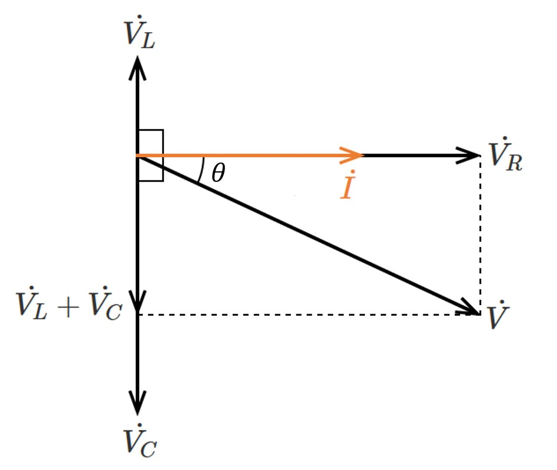

身近な家電製品から産業用の生産設備まで、幅広くコンピュータによる各種制御システムは組み込まれています。
電気は私たちの社会と生活を支えるエネルギーとして必要不可欠な存在です。
エレクトロニクスコースでは、電気電子機器の制御や電力運用、情報通信技術の習得に加えて、それらを支えるデバイスや材料についても学びます。
座学講義だけでなく実験実習によって実践的に学ぶことで、実社会で活かせる問題解決能力を養います。
電気工学の技術を身につけ、安全で自然にやさしい未来社会の実現に貢献できるエンジニアを目指します。
実用的な内容の実験・実習
2年次の「エレクトロニクス実験実習」では、キットを用いた太陽電池の作成と、その評価や電池の陰極材料の検討を行なうテーマがあります。また、知能情報コースとの合同グループにおいての太陽電池の計測実験を通して、技術者には必要不可欠な要素である協調性を養います。
環境に関わる学び
風力発電や太陽光発電などの自然エネルギーを活用した発電方法や、効率的な電気変換方法を学ぶことができます。また発電・発光素子の開発に役立つ知識を身につけられます。基盤専門科目に環境系科目はありませんが、電気分野の立場から、クリーンでエコな環境づくりに貢献できます。
時代に応じたカリキュラム構成
「半導体工学1・2」では、半導体デバイスの動作、機能や用途、またそれらの理解に必要な各種接合・接触の知識について学びます。世界的な半導体の不足により、半導体業界の技術者は圧倒的な需要があります。今後もIoT技術の発達により、さらなる需要の高まりが予想されるため、社会の即戦力となる人材を育成します。
エレクトロニクスコースでは主に「電気・電子系」と「材料・計測・制御系」の座学とともに「実験・実習系」の科目を通じて幅広い分野について学習します。
また「工学設計演習」ではエレクトロニクスコースとしては珍しい機械系CADである「Fusion360」を使って簡易的なロボットアームを作る実習を行います。
中学校の「理科」の延長線上にある基礎知識から、最先端技術にも対応できる応用的な知識までの修得を目指します。
これらの学びは、電気工事士や電気主任技術者の資格取得にも役立ちます。
| 学年 | 基盤専門科目 |
|---|---|
| 2年次 | エレクトロニクス概論/電気設備/電気回路1/電子回路1/電気電子材料1/エレクトロニクス実験実習 |
| 3年次 | 電気回路2/電磁気学1/電気電子材2/半導体工学1/工学設計演習/エレクトロニクス実験1 |
| 4年次 | 電子回路2/電気回路3/電磁気学2/電気電子材3/半導体工学2/コンピュータ工学基礎/制御工学1/ エレクトロニクス実験2 |
| 5年次 | 制御工学2/電気機器/電力技術/パワーエレクトロニクス/信号処理/電気化学/センサー工学/ワイヤレス技術/エレクトロニクス実験3/卒業研究 |
電磁気学は「静電場」「静磁場」「動電磁場」の大きく3つの領域に分けることができます。
ここでは、静電場でよく使われる法則を紹介します。
電荷分布に空間的なつ対称性がある場合、ガウスの法則の積分形を用いて電界\(\boldsymbol{E}\)を求めることができます。
従来のクーロンの法則を用いた求め方では複雑な積分計算が必要でしたが、この公式を使うと簡単に計算が可能です。
以下にガウスの法則の積分形を示します。ここで閉曲面内部の総電荷を\(Q\)、閉局面\(S\)の法線ベクトルを\(\boldsymbol{n}\)とします。
\[\oint_S \mathbf{E} \cdot \boldsymbol{n}\ dS = \frac{Q}{\varepsilon_0}\]
この式は、「電界を閉曲面で面積分したものが、体積領域の中の総電荷を真空の誘電率で割ったものに等しくなる」ことを意味しています。
閉曲面\(S\)の法線ベクトル\(\boldsymbol{n}\)との内積をとることで、閉曲面を垂直かつ外向きに貫く成分のみを対象としています。
右辺が正のとき左辺も正となり、電界\(\boldsymbol{E}\)が閉曲面を外向きに貫くため、同様に考えると総電荷\(Q\)が負の場合には、電界\(\boldsymbol{E}\)は閉曲面を内向きに貫きます。
このように電磁気学では、電気電子工学の基礎となる物理現象を学びます。
RLC直列回路の位相やインピーダンスについて考えていきます。下図は「抵抗」「インダクタンス」「キャパシタ」を直列に交流電源につないだ回路図です。
直列回路では電流が共通要素となります。
ベクトル図を考えると、抵抗の電圧と電流は同位相であり、またコイルの電圧は電流より\(90\)°進んでおり、コンデンサにおける電圧は電流より\(90\)°遅れています。

誘導性リアクタンスが\(ωL\)で容量性リアクタンスが\(\frac{1}{ωC}\)であることから電圧は次式で表されます。
\[V= \sqrt{R^2 + (ωL-\frac{1}{ωC})^2}I\]
これより導けることを以下に示します。